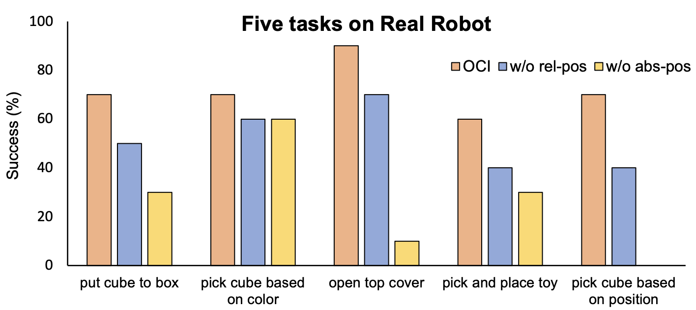

OCI-Robotics: Object-Centric Instruction Augmentation for Robotic Manipulation
- Junjie Wen1,*
- Yichen Zhu2,*
- Minjie Zhu1
- Jinming Li3
- Zhiyuan Xu2
- Zhengping Che2
- Chaomin Shen1,†
- Yaxin Peng3
- Dong Liu2
- Feifei Feng2
- and Jian Tang2,†
1 School of Computer Science, East China Normal University, China
2 Midea Group, China
3 Department of Mathematics, School of Science, Shanghai University, China
* Equal contribution.This work was done during Junjie Wen's, Minjie Zhu's, and Jinming Li's internship at Midea Group.
Accepted by 2024 IEEE International Conference on Robotics and Automation (ICRA)
Abstract
Humans interpret scenes by recognizing both the identities and positions of objects in their observations. For a robot to perform tasks such as “pick and place”, understanding both what the objects are and where they are located is crucial. While the former has been extensively discussed in the literature that uses the large language model to enrich the text descriptions, the latter remains underexplored. In this work, we introduce the Object-Centric Instruction Augmentation (OCI) framework. We utilize a Multi-modal Large Language Model (MLLM) to weave knowledge of object locations into natural language instruction, thus aiding the policy network in mastering actions for versatile manipulation. Additionally, we present a feature reuse mechanism to integrate the vision- language features from off-the-shelf pre-trained MLLM into policy networks. Through a series of simulated and real-world robotic tasks, we demonstrate that robotic manipulator imita- tion policies trained with our enhanced instructions outperform those relying solely on traditional language instructions.
Method
Prior works have studied the use of pre-trained Vision-Language Models (VLM) for robotics. Some works use pre-trained VLM as instruction
encoder or visual encoder. These prioapproaches use VLMs for visual state representations, for object navigation, for high-level planning
or for providing supervision or success detection . For instance, SuccessVQA uses VLM to detect whether the behavior is successful.
LMNAV does long-horizon navigation through out- door scenes from natural language instruction. Voltron presents a language-conditioned
visual representation from human videos. CLIPort and MOO, which integrate pre-trained VLMs into end-to-end visuomotor manipulation policies.
RT-2 develop an end-to-end framework that outputs actions with images and instructions directly.
Two examples of object-centric instruction augmentation for simulation and real robots, respectively. Given an initial instruction from the left figure, we augment them by providing the object’s absolute position and relative position to the robotics and obtain the action eventually.
Unlike prior applications of foundational models to down- stream tasks like planning and navigation, our goal is to enhance language
instructions to boost the generalizability of robotic manipulation, emphasizing positional cues for objects in text structure.There are two key
components to our OCI framework: 1) a fine-tuned MLLM that is adept at comprehending language and the environment, with the ability to
correlate an object’s location to its identity, and 2) a feature reuse mechanism that leverages the features embedding from MLLM to
improve policy learning.
Experiments
Our experiments aim to answer the following questions: 1) Does our method enable better policy learning than using naive language instruction? 2) Is our method effective with real-world environments? We initiate our discussion by outlining the simulation environments tailored to address these queries. Subsequently, we present in-depth experimen- tal results that positively affirm answers to both questions.
Simulated Franka Kitchen Environment
The example of Franka Kitchen for five tasks on two camera views.
We compare our model with R3M, which is the state-of-the-art method and widely applicable method in Franka Kitchen. We also compare with BLIP-2, a SOTA vision-language model. We replace our MLLM with BLIP-2 in our method and retain the FRM(Feature Reuse Module).And results are shown in the following figure.
Real-World Environment
We use the Franka robot with a 7-degree of freedom arm, which is equipped with a parallel jaw gripper (see following figure, left). Our workspace boasts two high-quality D435i RealSense RGBD cameras. We only use the RGB information in our experiments. The real robot setup is on the left and examples of tasks are on the right.
Results from real-world experiments.In this study, we progressively removed the relative position (denoted as “w/o rel-pos”) and the absolute position (denoted as “w/o abs-pos”).
